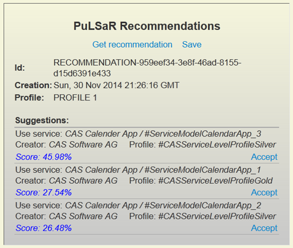
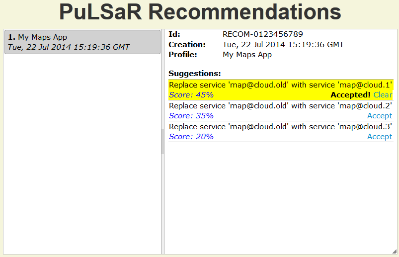

Scope of the guide
Broker@Cloud is offering a framework, services, mechanisms and tools for different quality assurance and optimization tasks on cloud service brokerage platforms along the service lifecycle.
The actors (service providers, hosting platforms, customers and consumers) of a Broker@Cloud-enabled Cloud Service Brokerage Platform Ecosystem are performing the following main tasks:
- Service Providers/Hosting Platforms: Service Description and Lifecycle Management
- Service Customers/Consumers: Service Consumption and Consumer Preferences Management
The role of broker policies in the service lifecycle management
Learn about the role of broker policies in the service lifecycle management
From the perspective of a service provider a broker policy is a "semantic and syntactic template" for a service description that enables the service provider to describe its service offering in terms understandable by the broker. For more details see the section What is a Broker Policy? in the Cloud Service Brokerage Expert and Developer Guide.
Creation and Management of Broker Policies
The Cloud Service Brokerage Platform Expert and Developer Guide is dealing in detail with all aspects around creation and management of broker policies in the Broker Policy Development. You need a file with a valid broker policy. The broker policy should also be deployed in your test system before you proceed with the next section.
Creation and management of service descriptions
Learn how to create and publish a service description
Similarly to a broker policy, a service description is described in Linked USDL with some specific extensions and conventions introduced in the Broker@Cloud methodology. Linked USDL is specified in RDF Schema on top of a number of RDF Schema ontologies like Good Relations. Hence, a text editor is the most flexible way to specify a service description that can potentially use the full modelling power offered through the ontologies linked into the Linked USDL. In this case, the broker can also take into consideration and specify in the broker policy aspects that might be relevant for the cloud service brokerage platform but are not covered by the minimal requirements on a broker policy and service description specified by the Broker@Cloud framework. Using a text-based RDF-editor, like the rdfEditor contained in the dotNetRDF Toolkit improves not only readability but also provides some usefull syntactic checks.
The modelling power and flexibility of Linked USDL has also a downside. Depending on the type and complexity of a broker policy, creation of a valid service description using a text-based editor might prove to be a time consuming and an error-prone procedure. We are offering two kinds of support tools: graphical service description editors for both types of broker policy and REST APIs for service description validity checking offered by the SC3 mechanism. A graphical service description editor significantly simplifies the creation of a service description. However, only creation of a minimal service description is supported, i.e., only creation of parts absolutelly necessary to satisfy the Broker@Cloud requirements on a Service Description specification is supported. The validity checking REST APIs offered by the SC3 mechanism check any service description specified in Linked USDL if it is compliant with respect to the Broker@Cloud requirements on a Service Description specification and with respect to the broker policy the service description refers to.
Graphical Service Description Editors
There are Graphical Service Description Editors for Type1 and for Type2 Broker Policies available.
- Service Description Editor (Broker Policy Type1)
- Service Description Editor(Broker Policy Type2)
Service Description Validation
Broker@Cloud project is operating an instance of a Broker@Cloud framework that can be used for different testing and validation tasks. This instance can be used also for validation of your service descriptions. Of course, you can use also your own Broker@Cloud instance if you already installed one.
SD validation using Broker@Cloud framework test instance (operated by Broker@Cloud)
First of all, you have to deploy the broker policy you used for the creation of your service description to the Broker@Cloud test instance if not already done. See Broker Policy Deployment section for further instructions.
Second, POST your service description to the following URL:http://213.249.38.66:3335/org.seerc.brokeratcloud.webservice/rest/serviceDescription/validate
For testing purposes, you can use e.g., RESTGate - a web-based client for REST services to test online or download a REST client for your browser like this Simple Rest Client for Google Chrome.
The following two screenshots show the validation request and response of a valid service description based on a valid commented broker policy of Type2 in the RESTGate client.
{kind=link}
{kind=link}
SD validation using your own Broker@Cloud framework instance
Use the instructions from the previous section by inserting the IP and port number of your Broker@Cloud framework instance in the following URL:
http://<your IP>:<your port number>/org.seerc.brokeratcloud.webservice/rest/serviceDescription/validate
Consumer Preference Specification and Management
A short video as well as additional material for PuLSaR are available at IMU web site.
Setting up Consumer Preference policy
Administrator must perform a series of tasks in order to setup Consumer Preferences policy (just as he must do for the Broker policy).
Defining optimisation attributes hierarchy
The purpose of this step is to prepare the hierarchy of optimisation attributes for use in consumer preference profiles. This hierarchy must conform to the business model of cloud broker and include meaningful attributes that can be monitored and exploited for service selection. A default optimisation attribute hierarchy based on SMICloud work is provided, however it is up to cloud broker to use it (actually load it into pulsar), create a new hierarchy from scratch or use the provided hierarchy with modifications.
To load the default optimisation attribute hierarchy you need to log in with administrator account and then select Import menu item. Then click somewhere in the white box to open file selection dialog box. Find and select the optimisation attribute hierarchy file (typically named as service-attributes-hierarchy-FINAL.ttl). Finally click Open button and wait until file is uploaded into RDF repository.
{kind=link}
To browse and/or modify optimisation attribute hierarchy you need to log in with an administrator account and then select Serv. Attr. Mgnt menu item.
{kind=link}
To modify an attribute just select it in the left-hand-side list and wait for its data to load in the edit pane in the central area of the page. Then edit any field that can be changed and click Save Changes to store them in RDF repository. To create a new attribute select its parent attribute or a sibling attribute in the left-hand-side list and click Create sibling or Create child button. Don't forget to set the Id field to a unique value.
Mapping optimisation attributes to classification dimensions
The purpose of this step is to associate the optimisation attributes with the classification dimensions (or functional categories) of the Broker Policy. It is possible to associate different attributes to each classification dimension, in order to enable pulsar present to consumers only the attributes relevant to the selected classification dimensions (see Consumer preference management for more information). If this feature is not desired or meaningful in your case then map all attributes onto the root classification dimension.
To create the attribute-to-dimension association you need to log in with administrator account and then select Attr. Mapping menu item. Then on a classification dimension in the left-hand-side list and wait until all relevant associations are loaded in the edit grid in the central area of the page.

Right click somewhere in the grid or list. When popup menu appears select New attribute item. Then page will be dimmed and the "Optimisation Attribute Selection" dialog box will appear. This dialog box contains the optimisation attribute hierarchy. You can expand it and select the attributes you want to associate with the (previously) selected classification dimension. When ready click Insert (it is above the list).
{kind=link}
After clicking "Insert" the dialog box disappears, the main page is undimmed and new associations are added in the grid for the selected attributes. Subsequently it is possible to edit association information such as Unit, Type, Allowed values, descriptive labels (in English and German) etc. Please note that as you move from field to field any changes are automatically saved.
Consumer preference management
Profile Management
Service consumers can use PuLSaR web interface in order to create consumer preference profiles. The profiles are "containers" of service selection criteria used by PuLSaR in order to provide service recommendation to consumers. A consumer can create as many profiles as he wishes.
To create, edit or delete a profile you need to log in with a consumer account and then click on "Pref. Profile" menu item. The consumer preference profiles management page will be loaded. In the left-hand-side list all profiles associated to the consumer account are listed. By selecting one of them its details will be loaded in the edit pane in the central area of the page. When a profile is loaded it is possible modify its name, description, selection policy and classification dimensions. Remember to click Save Changes button in order to store any modifications. It is also possible to delete an existing profile or create a new (empty) one.

Selection criteria
After setting profile's main data it is possible to edit its selection criteria. Selection criteria are the optimisation attributes associated to the classification dimensions selected in the profile management page. Furthermore, the parent attributes of the associated attributes are also available as selection criteria.
To edit selection criteria, click on 2 Criteria tab and wait until page is loaded. Then you will be able to select those attributes that will act as selection criteria for this profile. You can select an attribute by clicking in the empty space after the row number of an attribute. A green tick must appear. When ready click "Save selections" button above the grid.

Setting criteria weights - The AHP method
Selection criteria can have weights (i.e. not all of them are of equal importance) in order to affect the service selection process according to their relative importance. PuLSaR can help simplifying the weight assignment task using a decision making method called Analytic Hierarchy Process (AHP). AHP transforms the criteria weights calculation problem into a series of pairwise comparisons.
To have PuLSaR help you decide criteria weights (through pairwise comparisons of attributes) click on 3 Weights calc. tab and wait until page is loaded. Then indicate your preference for every pairwise comparison by sliding the corresponding slider. When ready click Save and Calculate weights.
{kind=link}
Fine tuning criteria - Defining criteria constraints
Next, you can go to Constraints page where you can fine tune criteria weights or set them if you have skipped the pairwise comparisons step, and also define constraints on the allowed values of each criterion.
To modify fine tune criteria weights and define constraints you should click on 4 Constraints tab and wait until page is loaded. Criteria weights can be modified by clicking on the weight value (an edit field will appear). Please be careful to provide valid values (either as decimals in 0..1 range or as numbers in 0%..100% range). Constraints can be defined by clicking on any criterion cell in Constraints column. A popup editor will appear where you can write the constraint. Please take care to provide constraints relevant to each criterion type. If you wish to remove a constraint then type a dash -. When ready click Save changes button. When modifying weights it is a good practice to click the Normalize weights button in order to ensure the sum of all weights is always 100%.

Consumer recommendations
On-demand recommendations
Service consumers can ask PuLSaR to provide a service recommendation for a profile. On demand recommendations are provided through the profile management page.
To request a recommendation you need to log in with a consumer account and then click on "Pref. Profile" menu item. The consumer preference profiles management page will be loaded. In the left-hand-side list all profiles associated to the consumer account are listed. Select a profile and click "Get recommendation" link in "PuLSaR recommendation" area at the right-hand side. If the profile is correct (and complete) and services that meet your profile's requirements exist, they should be listed in "PuLSaR recommendations" area. If you wish you can save recommendation for future reference from Recommendation page (see next). Note: if you don't save recommendation it will be lost when you change page.
When you save recommendation it will be possible to mark any suggested service as "Accepted".
{kind=link}
Automatic recommendation
PuLSaR periodically (or when a relevant service changes) checks consumer profiles and generates new recommendations automatically (based on new cloud services, existing ones being deprecated etc.). These recommendations are saved for review from consumers.
To view automatically generated or saved, on-demand recommendations you need to log in with a consumer account and then click on "Recommendations" menu item. In the left-hand-side list there is a list of your profiles. Selecting one of them will load the most recent recommendation in the right-hand-side pane.You can mark/unmark any suggested service as "Accepted".
{kind=link}
PuLSaR Recommendations
Provider feedback
Service providers can use PuLSaR web interface in order to check how their services have been ranked with regards to consumer profiles. These information are called Notifications in PuLSaR. For each consumer profile a separate notification will be displayed.
To view notifications you need to log in using a service provider account and then click on "Notifications" menu item. In the left-hand-side list you can see all services and service offers provided by the provider. Selecting a service will cause any relevant notifications to be loaded in the notifications pane in the central area of the page.

PuLSaR Notifications